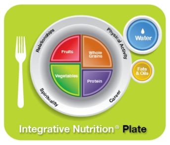

I practice a holistic approach to health and wellness, which means that I look at how all areas of your life are connected. Does stress at your job or in your relationship cause you to overeat? Does lack of sleep or low energy prevent you from exercising? As we work together, we will look at how all parts of your life affect your health as a whole.
My approach is not to dwell on calories, carbs, fats, and proteins. It is not to create lists of restrictions or good and bad foods. Instead, I work with my clients to create a happy, healthy life in a way that is flexible, fun and rewarding.
Together we’ll work to reach your health goals in areas such as achieving optimal weight, reducing food cravings, increasing sleep, and maximizing energy. As we work together, you’ll develop a deeper understanding of the food and lifestyle choices that work best for you and implement lasting changes that will improve your energy, balance and health.
You can learn more about my training at the Institute for Integrative Nutrition.
Are you ready to start feeling better than ever?Schedule an initial consultation with me today!
The Integrative Nutrition Plate emphasizes the importance of local and organic produce, whole grains, high-quality proteins, plant-based fats, and water. It shows you how a plate should appear at mealtime and emphasizes the importance of proportions and portion size. To complete the picture, the plate is surrounded with lifestyle factors that create optimal health: relationship, career, physical activity and spirituality. I’ll introduce you to some of the healthiest foods on the planet and teach you how to find what’s healthiest for your unique body!
It’s easy to overlook all of the things that contribute to our sense of nourishment and fulfillment. It’s not just the food we eat that affects our health, but all of the other factors present in our daily lives. Healthy relationships, a fulfilling career, regular physical activity, and a spiritual awareness are essential forms of nourishment. When these “primary foods” are balanced, what you eat becomes secondary. I will support you in achieving all of your goals, from eating the right foods for your body to living an inspired, fulfilling life.
The concept of bio-individuality is the idea that each of us has unique food and lifestyle needs. One person’s food is another person’s poison, and that’s why fad diets tend to fail in the long run. Working on the principle of bio-individuality, I’ll support you to make positive changes that are based on your unique needs, lifestyle, preferences, and ancestral background.
Many nutrition experts give their clients a list of foods to avoid and foods to eat, which explains why so many people are turned off by nutrition. My approach is different – by eating and drinking foods that are good for you, you will naturally have less room and desire for unhealthy foods. Simply put, you will “crowd out” the unhealthy food in your diet. This takes a little practice to make happen, but I will support you all the way.
Cravings play a critical role in understanding what your body needs and shouldn’t be ignored. When you learn how to deconstruct your cravings and understand what they’re really telling you, you will be able to reclaim a sense of balance and harmony.